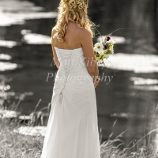

Example work
Art means so many things to so many people. Art for me is combining my love of photography with digital software. I became hooked on Adobe Photoshop whilst learning to finely tune my photographs. The capabilities allow for pretty much anything to be created, the only boundaries are skills and imagination, both can always be expanded and always lead to new ideas and methods. Although this is a service I do not currently provide I love working for a local photographer John Holbrook Photography as a second shooter, gaining valuable experience in all aspects of photography and customer service.
